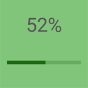
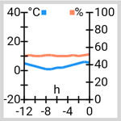

Dashboard
In addition to the “Messages” view the app offers a “Dashboard” view
with graphical user interface. It allows creating display and control
elements (so-called “dashes”), e.g. temperature display, light control
switches, alarms, and more.
Note:
Immediately after selecting a list entry of a push server account, you are taken to
either the “Dashboard” or “Messages” view. This depends on what you had selected last.
You can switch to the other view by tapping on the or  icon in the navigation bar.
and selecting Messages or Dashboard.
icon in the navigation bar.
and selecting Messages or Dashboard.
- After starting the app tap on the list entry of the desired push server
account.
- Then, in the “Messages” window, tap on the icon. and select Dashboard.
Now you are in the “Dashboard“ mode.
- Tap on the
 icon.Again tap on the icon and select the Edit Dashboard
entry.
icon.Again tap on the icon and select the Edit Dashboard
entry.
- Tap on the icon.
A pop-up menu provides several dash templates for various purposes, which
offer a good base for creating own solutions.
| Dash | Explanation |
| Text View | Allows displaying messages in text form and
entering values. See the Text View section |
| Button/Switch | Creates a button or a switch. See the
Button/Switch section |
| Progress Bar/Slider | Represents a value range by
a bar. If a “Publish Topic” is specified, a new value can be set and sent
using a slider. See the Progress Bar/Slider section |
| Option List | Allows the definition of any set of
values. See the Option List section |
| Custom View | Allows creating new dashes in HTML. See
the Custom View section |
| Group | Allows grouping dash tiles.
See the Group section |
Templates for dashes
Text View

Represents the content of a message in text form. If a “Publish
Topic” has been specified, a value can be entered and sent in the detail
view.
- Required elements:
Topic (sub), Input Type
- Optional elements:
Name, Group, Pos,
Color, Text Size,
Image, Filter Script,
Topic (pub), Retain,
Script
Generates a button element which works e.g. as a push button which sends a
message upon tapping. For this, the “Off state” fields remains blank. If
the button is created as a switch that changes its state (on/off) depending
on the value of the last received message, a topic must be entered in
“Off state”. This could be used to control an alarm system, for example.
Another example of a dash that switches a light on and off, and informs about
the current switching status at the same time, can be found here.
- Required elements:
Topic (sub), Topic
(pub)*, Value
- Optional elements:
Name, Group, Pos,
Color, Text Size,
Image, Filter Script,
Retain,
Script
* If used as a switch with status request, otherwise
optional
Progress Bar/Slider

A value range is represented by a bar, with the bar being colored up
to the current value (like a progress bar). If a “Publish Topic” has
been specified, a new value can be set and sent in the detail view using
a slider.
- Required elements:
Range, Topic (sub),
Topic (pub)*
- Optional elements:
Name, Group, Pos,
Color, Text Size,
Image, Filter Script,
Retain,
Decimal, Display in percent,
Script
* If used as a slider for transmitting values,
otherwise optional
Option List


Allows the definition of a set of values. A display value can be defined
for each option, which is shown instead of the actual value.
Group

For a better overview in the dashboard, groups can be created to which
individual dashes can be assigned. These could be, for example, logical
group subdivisions: cellar, ground floor, upper floor, garden house, etc.
Note:
Individual dashes can be grouped or assigned to another group. For
this, tap and hold the desired dash tile (“Long Press”) until the  symbol appears in the tile.
Then press
symbol appears in the tile.
Then press  to open the dash
tile editor.
to open the dash
tile editor.
Individual dashes can be grouped or assigned to another group. For
this, tap on and select Edit Dashboard. Then, tap on the desired tiles (the symbol appears in the tile) and press
to open the dash tile editor.
Use “Group” and “Pos” to bring the tile in the desired position.
Custom View

“Custom View” corresponds to a standard browser window, which can be
used to create individual interfaces and operating elements. This allows
you to create any dashes in HTML. The HTML can contain additional JavaScript
code to program dashes with individual logic.
An application programming interface (API) can be used to receive
MQTT messages, query settings and access resources such as imported images (see
Dashboard Scripts).
Alternatively, by tapping the overflow menu ( ) under “Insert Example”and selecting Insert Example, you can get seven
different HTML templates (Basic HTML, Color Picker,
Gauge, Clock, Light Switch with Color Picker,
Thermometer and Line Graph) that can be inserted and
edited directly in the dash.
) under “Insert Example”and selecting Insert Example, you can get seven
different HTML templates (Basic HTML, Color Picker,
Gauge, Clock, Light Switch with Color Picker,
Thermometer and Line Graph) that can be inserted and
edited directly in the dash.
Note:
Advanced knowledge of HTML and JavaScript is required to create a
Custom View. Some examples use HTML5 and may not run on older mobile
devices. In the examples where received message data is processed, the
code must be adapted according to the data structure of the message
content. See Custom View
HTML.
Configuration elements
- Name
Enter the name of the dash to be created
- Group
Assign the dash to a group
- Pos
Define the position of the dash tile within a group
- Value
Define a value for the respective switching state
- Color
Select a color for the respective configuration context (e.g. foreground,
background, text, progress bar)
- Text Size
Select the text size (“small”/“medium”/“large”)
- Image
Select an image (see
Import own images into the app)
- Topic (sub)
Specify the topic for which you wish to receive messages/values
- Filter Script
Enter JavaScript based filter scripts, which analyse and format the message
content. In addition, you may dynamically apply styles to the dash,
depending on the values received, e.g. background color, text
size, etc. See Dashboard Scripts
- Topic (pub)
Specify the topic to which values are to be sent
- Retain
Specify that sent messages are retained on the MQTT server. Only the
last message sent per topic is retained
- Input Type
Switch from text to numerical input
- Range
Define the value range of the progress bar and slider to be displayed
- Display in percent
Define that a value is displayed in percent (related to the entire value
range)
- Decimal
Define the decimal places of the displayed value
- Option List
Define a display value or an image file for each option, to be
displayed instead of the actual value
- Script
Enter a script to prepare data to be sent, e.g. in the JSON format.
Depending on the dash, a user action may be required, e.g. by tapping a
button (see section Button/Switch). A “Topic (pub)”
must have been set for this. You also have the option of making the dash
dynamic (e.g. to display the background color, test size, etc. depending
of published values). See Dashboard Scripts
- Parameters
Specify values that are passed when a dash is initialized, for example,
to change the display depending on this value. Parameters can be queried
via the JavaScript interface (see
MQTT.view.getParameters() description)
- HTML
Enter your own HTML code to design the dash tile. The integration of
JavaScript is also permitted
- Provide historical data
If this option is activated, up to 100 of the latest messages are retained.
These can be queried via the JavaScript interface (see
MQTT.view.getHistoticalData())
Import own images into the app
Some dashes allow the integration of images (backgrounds, status of
switches, etc.). In order for your own pictures to be available in the app,
they must first be imported into the app:
- In the “Dashboard” window, select the “Manage Images”
Manage Images entry from the overflow
menu ().
- In the “Manage Images” window open the overflow menu ()
again, tap on “Import”Import
and select those images that you would like to import into the app.
All images that were imported into the app are shown in the “Manage
Images” window:
When exiting the app, images that are not used in any dash are deleted.
The same applies to images that are referenced exclusively in the script
code. To prevent this, they can be protected. In the picture above you
can already see two previously imported pictures.
Both are marked with such a protection ( ).
).
- Tap and hold the desired image file (“Long Press”) until appears.
- Tap on , select Edit
and tap on the desired image file.
Those images marked with a , as well as images that have been explicitly selected
as background image or label for the Button/Switch or
Option List dashes, will be retained when the app is restarted.
Note on images with transparencies:
If images containing transparencies are included in the dash via the
“Image” field, these transparencies are preserved.
The following figure shows the comparison between an image with
(left) and one without transparencies (right). Both images are
placed on a yellow background:

Images that are used in buttons can be colorized. Images without
transparency would be colorized completely with the selected color.
The following figure is based on the previous one, but has an additional
red coloration of the foreground:

Examples
Let's configure a dash, which switches a light on and off and at the same
time informs about the current switching status.
- Select the “Button/Switch” entry from the menu:
- First of all, specify a name for the dash (in the example above
it is “Switch”).
- Specify a unique value (“Value”) for the switching states On
(“On state”) and Off (“Off state”). If necessary, define the
background color for the dash tile itself and the foreground and background
color for the switching states.
An image can also be used in addition to a background color:
- Tap on the button located next to “Image”.
The “Select an Image” window provides a number of icons and symbols.
Alternatively, you can also use your own images that you have previously
imported into the app (see Import own images
into the app).
- Enter a topic for both reception (“Topic (sub)”in the “Subscribe” section) and transmission
(“Topic (pub)”in the “Publish” section).
- As soon as you have finished the configuration tap on to save your entries/changes.
Only in this way the dash can query the switch status (“Topic (sub)”in the “Subscribe” section)
from the server and send switch commands to the server (“Topic (pub)”in the “Publish” section).